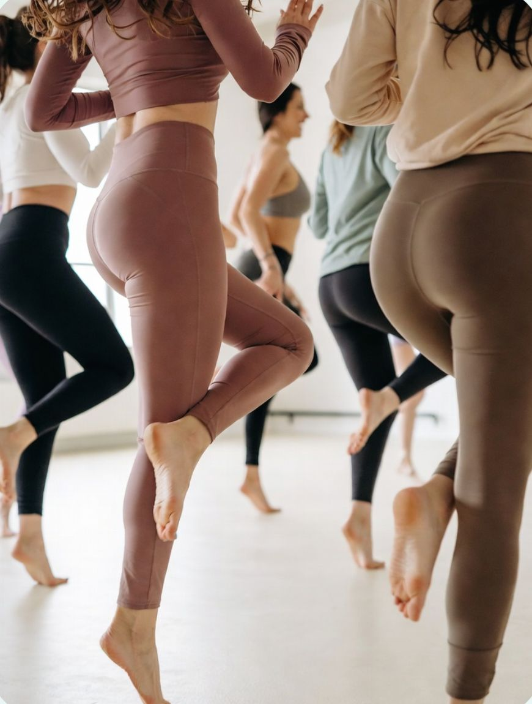

Size iyi gelecek dersi birlikte bulalım.
Hangi dersle başlayacağınızdan emin değilseniz sorun değil; ilk görüşmede fizyoterapistinizle birlikte karar veriyorsunuz.
Pilates · Fizyoterapi
Klinik Pilates
Kontrolü ele al, güçlen!
Zayıf kaslar, kötü postür, hareket kısıtlılığı… Klinik pilates; fizyoterapistiniz tarafından sağlık durumunuza göre planlanan, kontrollü ve güvenli bir egzersiz yöntemidir.
- Bel ve boyun ağrısı yaşayanlar
- Duruş bozukluğu ve skolyoz
- Masa başı çalışanlar
- Sakatlık sonrası güçlenmek isteyenler
Yoga · Nefes
Mat Yogası
Bedenini ve zihnini hafiflet!
Yoga, nefes ve gevşeme teknikleriyle tüm gerginliklerinizden arının. Esnekliğinizi ve dengenizi artırırken zihninizi de sakinleştirin.
- Stres ve gerginlik yaşayanlar
- Esneklik kazanmak isteyenler
- Uyku düzenini iyileştirmek isteyenler
- Nefes farkındalığı arayanlar

Dans · Kardiyo
Zumba
Enerjini müzikle yükselt!
Müzik eşliğinde, keyifli ve yüksek tempolu kardiyo dersleri. Hem eğlenin hem kondisyonunuzu artırın.
- Kondisyon ve kalori yakımı
- Grup enerjisini sevenler
- Hareketle stres atmak isteyenler
- Eğlenerek formda kalmak isteyenler
Rehabilitasyon
Fizyoterapi
Ağrısız bir yaşama adım at!
Postür analizi, skolyoz egzersizleri ve bireysel rehabilitasyon programlarıyla ağrınızın kaynağına odaklanıyoruz.
- Postür ve hareket analizi
- Skolyoz egzersizleri
- Ameliyat sonrası rehabilitasyon
- Kronik ağrı yönetimi
Gebelik · Doğum sonrası
Hamile & Doğum Sonrası
Anneliğe en sağlam adımı at!
Gebelik ve doğum sürecine bilinçli hazırlanın. Gebeliğinizin dönemine uygun güvenli egzersizlerle güçlenin, doğumdan sonra bedeninize güvenle geri dönün.
- Gebeliğe uygun güçlenme
- Pelvik taban çalışmaları
- Doğuma hazırlık ve nefes
- Doğum sonrası toparlanma
Hangi dersin size uygun olduğunu birlikte belirleyelim.
Ön görüşme ücretsizdir ve hiçbir yükümlülük getirmez.